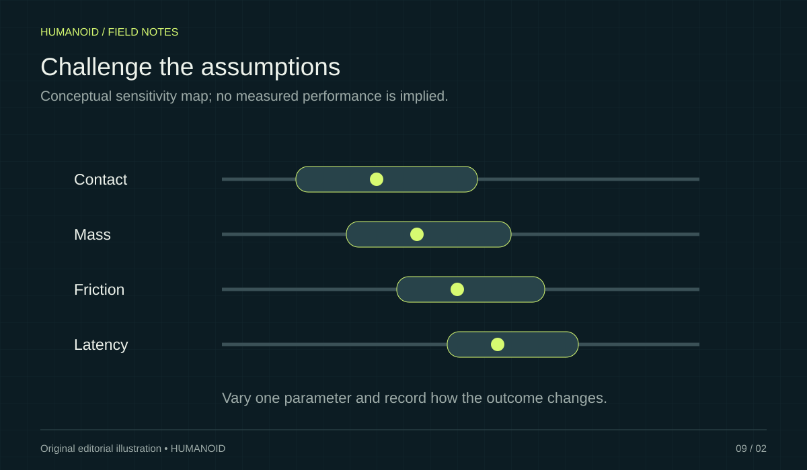

Simulation is a repeatable experimental environment. Physical behavior still needs its own evidence.
Simulation is useful because you can inspect assumptions, repeat experiments, and change a setup without rebuilding a physical scene each time. Its limits are equally important. A successful simulated result says something about the model and controller together; it does not establish that every detail transfers to hardware.
Choose the question before the scene
A simulation study becomes more useful when it answers a specific question about reach, interaction, or control behavior. Define what output would support the decision you need to make. Avoid spending the entire project making a scene look realistic when the important assumption has not been identified.
Record the model’s assumptions
Keep track of geometry, mass properties, contact settings, and actuator representations. Note which values come from documentation and which are estimates. When a result changes, those records help explain whether the cause is the controller, the model, or an experimental setting.
Use variation to challenge the result
Try plausible changes to the setup rather than one ideal condition. The goal is to learn which assumptions the approach depends on most strongly. Treat a fragile result as useful information about where a physical trial needs closer observation, not merely as a simulation to tune until it passes.

Design the hardware comparison early
Choose observations that can be recorded in both simulated and physical experiments. Begin physical work within the platform’s documented procedures and appropriate supervision. Compare what happened with what the model predicted. A discrepancy is an opportunity to improve the model or narrow the claim being made.
Build a ladder of experiments
Imagine a project that transfers a container between two shelves. Begin with a question that can be answered without detailed contact behavior: can the proposed arm configuration reach both locations while respecting the joint limits represented in the model? Next, introduce the container and examine the planned approach. Only then add more demanding questions about grasping and placement. This sequence gives each experiment a clear purpose and makes a failure easier to locate. A complicated scene that fails immediately can conceal several unrelated problems. A sequence of small experiments lets the team preserve useful results while investigating the next uncertainty.
Keep a short experiment card for each step. Write the question, the parameters you changed, the observations you saved, and the decision the result supports. Include a screenshot or trajectory plot when it clarifies the observation. The card should be understandable to someone who did not build the scene.
Separate tuning from evaluation
A controller repeatedly adjusted against the same starting arrangement may become very good at that arrangement. Set aside a second collection of conditions before tuning begins. For the shelf example, that could mean different container positions and modestly different shelf heights within the intended workspace. Label these conditions as evaluation cases and avoid using them as the everyday tuning target. The point is to discover whether the approach works beyond the exact example used to develop it.
Record the outcome of every evaluation case, including incomplete attempts. If a change improves one case while breaking another, preserve that trade-off in the report. A single average can hide a recurring problem at the edge of the workspace. A small table of outcomes is often more useful than a polished video of the best run.
Turn discrepancies into the next experiment
Suppose a simulated placement finishes cleanly but the physical trial requires a manual reset. Resist the urge to change several settings until the difference disappears. First describe the mismatch in observable terms: the object stopped short, the motion took longer, or the final pose differed. Then identify which assumptions could plausibly affect that observation and design a smaller comparison. This keeps the investigation connected to evidence.
Maintain a transfer log with the simulation version, hardware configuration, measured difference, and next question. Some differences may justify improving the model; others may justify narrowing the operating conditions. Both can be useful outcomes. The final report should distinguish what simulation helped select, what the physical trial established, and what remains unresolved. That distinction gives the next engineer a reliable starting point.
Your next step.
- Define one experimental question.
- Track model assumptions and versions.
- Plan comparable measurements before the hardware trial.
Sources & further reading
Primary sources and manufacturer documentation for the examples and further investigation. Recommendations in this article are HUMANOID’s editorial guidance.
MuJoCo: official overview ↗Pollen Robotics: simulation resources ↗Originally prepared and references reviewed: 24 October 2026. Expanded with practical guidance and original illustrations: 25 October 2026. Editorial archive date: 20 Jul 2026. This is original editorial content, not a record of a historical product launch, independent test, or purchase.